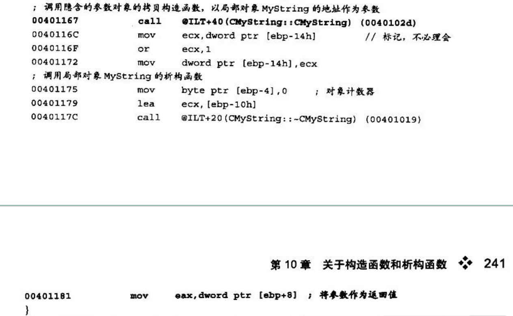

关于构造函数和析构函数
构造函数：常用来完成对象生成时的数据初始化工作。
析构函数：常用于在对象销毁时释放对象中所申请的资源
构造函数与析构函数都是类中特殊的成员函数，构造函数支持函数重载，而析构函数只能是一个无参函数。它们不可定义返回值，调用构造函数后，返回值为对象首地址，也就是this指针。
构造函数出现的时机
局部对象：
当对象产生时就可能引发构造函数的调用。来个栗子~
1
2
3
4
5
6
7
8
9
10
11
12
13
14
15
16
17
18
19
20
21
22
23
24
25
26
27
28
29
30
31
32
33
34
35//无参构造函数的调用过程
class CNumber{
public:
CNumber(){
m_nNumber = 1;
}
int m_nNumber;
}
void main(){
CNumber Number;
}
//C++源码与对应汇编代码讲解
void main(){
CNumber Number;
0040B468 lea ecx,[ebp-4] ;取得对象首地址,传入ecx中作为参数
0040B46B call @ILT+5 (CNumber::CNumber) (0040100a) ; 调用构造函数
}
//构造函数CNumber分析
CNumber();
;函数入口分析略
0040B4A9 pop ecx ;还原ecx,ecx中保存对象的首地址
0040B4AA mov dword ptr [ebp-4],ecx ;[ebp-4] 就是this指针
{
m_nNumber = 1;
0040B4AD mov eax,dword ptr [ebp-4] ;eax中保存了对象的首地址
0040B4B0 mov dword ptr [eax],1 ;将数据成员m_nNumber设置为1
}
0040B4B6 mov eax,dword ptr [ebp-4] ;将this指针存入eax中，作为返回值
0040B4B9 pop edi
0040B4BA pop esi
0040B4BB pop ebx
0040B4BC mov esp,ebp
0040B4BE pop ebp
0040B4BF ret当在进人对象的作用域时，编译器会产生调用构造函数的代码。由于构造函数属于成员函数，因此在调用的过程中同样需要传递this指针。构造函数调用结束后，会将this指针作为返回值。总结一下局部对象构造函数的必要条件：
- 该成员函数是这个对象在作用域内调用的第一个成员函数，根据this指针即可以区分
- 返回this指针
堆对象：
堆对象的识别重点在于识别堆空间的申请与使用。在C++的语法中，堆空间的申请需要使用malloc函数、new运算符或者其他同类功能的函数。因此，识别堆对象有了重要的依据。来个栗子！
(从这里开始我有的代码部分要直接截图了，👴就是懒狗！)

在使用了new申请了堆空间之后，需要调用构造函数，用来完成数据成员的初始化。相应的，如果没有申请成功，则会避开构造函数的调用。对此，编译器会产生一个双分支结构来根据不同的结果采取相应的行为。这是检查的重点。
1
2
3
4//圆括号是调用有参构造函数，最后只申请了一个int类型的堆变量并赋初值10
int *pInt = new int (10);
//方括号才是申请了10个int元素的堆数组
int *pInt = new int [10];参数对象：
参数对象属于局部对象中的–种特殊情况。当对象作为函数参数时，调用一个特殊的构造函数——拷贝构造函数。该构造函数只有一个参数，类型为对象的引用。
当对象为参数的时候触发此类对象的拷贝构造函数。在函数调用时传递参数会进行复制，形参是实参的副本。两个对象的复制过程会在拷贝构造函数中完成。如果没有定义拷贝构造函数，编译器会对原对象与拷贝对象中的各数据成员直接进行数据复制，称为默认拷贝构造函数，这种拷贝方式属于浅拷贝：
1
2
3
4
5
6
7
8
9
10
11class CNumber {
public:
CNumber() {
m_nNumber = 1;
}
int m_nNumber;
};
void main() {
CNumber Number;
CNumber number(Number);
}但是这种函数在有析构函数的情况下会出错，那么就需要深拷贝来救场了。源对象中的数据成员间接访问到的其他资源并制作副本的拷贝构造函数称为深拷贝。
来个栗子！


返回对象
与参数对象的区别是：当对象作为参数时，在进入函数前使用拷贝构造函数，而返回对象则在函数返回时使用拷贝构造函数。
来个栗子~

这种返回对象的函数和返回对象指针类型的函数在汇编中的区别就是：返回值和参数为对象指针类型的函数，不会使用以参数为目标的拷贝构造函数，而是直接使用指针保存对象首地址。
1
2
3
4
5
6
7
8
9
10
11
12
13
14
15//函数的返回类型与参数类型都是对象的指针类型
CMyString* GetMyString (CMyString* pMyString) {
CMyString MyString; //定义局部对象
MyString.SetString ("World");
pMyString = &MyString;
00401589 lea eax,[ebp-10h] ;直接保存对象首地址
0040158C mov dword ptr [ebp+8],eax
return &MyString;
0040158F lea ecx,[ebp-10h]
00401592 mov dword ptr [ebp-14h],ecx
00401595 mov dword ptr [ebp-4],0FFFFFFFFh
0040159C lea ecx,[ebp-10h] ;将局部对象作为返回值
0040159F call @ILT+35 (CMyString::-CMyString) (00401028)
004015A4 mov eax,dword ptr [ebp-14h]
}全局对象与静态对象
这两类对象的构造时机相同，它们的构造函数的调用被隐藏在深处，但是识别过程很容易。因为程序中所有的全局对象将会在同一地点调用构造函数来初始化数据。
构造函数需要传递对象的首地址作为this指针,而且构造函数可以带各类参数，因此编译器将为每个全局对象生成一段传递this指针和参数的代码，然后使用无参的代理函数去调用构造函数。
如何跟踪？
直接定位初始化函数
利用栈回溯
如果反汇编代码中出现了全局对象，由于全局对象的地址固定(对于有重定位表的执行文件中的全局对象，也可以在执行文件被加载后至执行前计算得到全局对象的地址)，因此可以在对象的数据成员中设置读写断点，调试运行程序，等待构造函数调用的到来。利用栈回溯窗口，找到程序的执行流程，依次向上查询即可找到构造函数调用的起始处。
每个对象都有默认的构造函数吗
并不是。只有以下两种情况会有：
本类、本类中定义的成员对象或者父类中有虚函数存在
由于需要初始化虚表，且这个工作理应在构造函数中隐式完成，因此在没有定义构造函数的情况下，编译器会添加默认的构造函数用于隐式完成虚表的初始化工作
父类或本类中定义的成员对象带有构造函数
在对象被定义时，由于对象本身为派生类，因此构造顺序是先构造父类再构造自身。当父类中带有构造函数时，将会调用父类构造函数，而这个调用过程需要在构造函数内完成，因此编译器添加了默认的构造函数来完成这个调用过程。成员对象带有构造函数的情况与此相同。
析构函数出现的时机
对象何时被销毁取决于对象所在的作用域，当程序流程执行到作用域结束处时，便会将该作用域内的所有对象释放，释放的过程中会调用到对象的析构函数。
析构函数的触发时机分为以下几种情况
- 局部对象:作用域结束前调用析构函数
- 堆对象:释放堆空间前调用析构函数
- 参数对象:退出函数前，调用参数对象的析构函数
- 返回对象:如无对象引用定义，退出函数后，调用返回对象的析构函数，否则与对象引用的作用域一致
- 全局对象: main函数退出后调用析构函数
- 静态对象:main函数退出后调用析构函数
堆对象
书上给了几个代码👴觉得很有学习必要，截图了
堆对象析构函数的调用
1 | int main(ubt argc,char* argv[]){ |
多个堆对象的申请与释放
堆对象的构造代理函数

堆对象释放函数分析
参数对象和返回对象
1 | CMyString MyString = GetMyString(); |
这是把MyString的地址作为隐含的参数传递给GetMyString()，在GetMyString()内部完成拷贝构造的过程。函数执行完毕后，MyString 就已经构造完成了，所以析构函数由MyString的作用域来决定.
1 | MyString = GetMyString(); |
因为这样的代码不是MyString在定义时赋初值，所以不会触发MyString的拷贝构造函数，这时候会产生临时对象作为GetMyString()的隐含参数，这个临时对象会在GetMyString0内部完成拷贝构造函数的过程。函数执行完毕后，如果MyString的类中定义了“=”运算符重载，则调用之;否则就根据对象成员逐个赋值。如果对象内数据量过大，就会调用rep movs这样的串操作指令批量赋值，这样的赋值也属于浅拷贝。临时对象以一条高级语句为生命周期，它在函数调用时产生，在语句执行完毕时销毁。C和C++以分号作为语句的结束符，也就是说，- -旦分号出现，就会触发临时对象的析构函数。
全局变量
全局对象与静态对象相同，其构造函数在函数 _cinit的第二个 _initterm调用中被构造。它们的析构函数的调用时机是在main函数执行完毕之后。既然构造函数出现在初始化过程中，对应的析构函数就会出现在程序结束处。
在main函数调用结束后，由exit来结束进程，从而终止程序的运行。全局变量的析构函数的调用也在其中(exit函数的doexit实现)
1 | if (__onexitbegin) { //_onexitbegin 为函数指针数组的首地址 |
__onexitbegin 指向一个指针数组，该数组中保存着各类资源释放时的函数的首地址。全局构造函数的调用是在 _cinit 函数的第二个 _initterm 函数内完成，而在第二个 _initterm函数中，会先执行 _onexitinit 函数的初始化函数指针数组。在执行每个全局对象构造代理函数时都会先执行对象的构造函数，然后使用atexit注册析构代理函数。
思考题
对于全局对象和静态对象，能不能取消代理函数而直接在main函数前调用其构造函数呢?
不能。由于构造函数可以重载，因此其参数的类型、个数和顺序都无法预知，也就无法预先定义构造函数。函数参数如何匹配呢?如何保证栈顶平衡呢?最简洁的办法就是使用代理函数。
编译器为每个全局对象分别生成构造代理函数，由代理函数去调用各类形形色色的参数和约定的构造函数。由于代理函数的类型被统一指定为PVFV，因此能通过数组统一地管理和执行。
虚函数
对象的多态性需要通过虚表和虚表指针来完成，虚表指针被定义在对象首地址的前4字节处，因此虚函数必须作为成员函数使用。
虚函数的机制
在C++中，使用关键字virtual声明函数为虚函数。当类中定义有虚函数时，编译器会将该类中所有虚函数的首地址保存在一-张地址表中，这张表被称为虛函数地址表，简称虚表。同时，编译器还会在类中添加-一个隐藏数据成员，称为虚表指针。该指针中保存着虚表的首地址，用于记录和查找虚函数。
来份代码！
1 | class CVirtual{ |
这个类的大小为8，多出的4个字节用于保存虚表指针。在虚表指针所指向的函数指针数组中，保存着虚函数GetNumber和SetNumber的首地址。对于开发者而言，虚表和虚表指针都是隐藏的，在常规的开发过程中感觉不到它们的存在。
虚表指针和虚表的关系如图
虚表指针初始化：
1 | //C++源码与对应汇编代码讲解; |
编译器为类CVirtual提供了默认的构造函数。该默认构造函数先取得虚表首地址再赋值到虚表指针中。
对象的虚表指针初始化是通过编译器在构造函数内插入代码来完成的。由于虚表信息在编译后会被链接到对应的执行文件中，因此所获得的虛表地址是一个相对固定的地址。虛表中虛函数的地址的排列顺序依据虛函数在类中的声明顺序而定，先声明的虚函数的地址会被排列在虚表中靠前的位置。
对于含有构造函数的类而言，其虚表初始化过程和默认构造函数相同，都是以对象首地址的前4字节数据保存虚表的首地址。如图
对于单线继承的类结构，在其某个成员函数中，将this的地址赋值为虛表首地址时，可以判定这个成员函数为构造函数。
析构函数分析：
1 | // C++源码与对应汇编代码讲解 |
析构函数中的填写虚表，是在还原虚表指针，让其指向自身的虚表首地址，防止在析构函数中调用虚函数时取到非自身虚表，从而导致函数调用错误。
虚函数的识别
有以下特征
- 类中隐式定义了一个数据成员;
- 该数据成员在首地址处，占4字节;
- 构造函数会将此数据成员初始化为某个数组的首地址;
- 这个地址属于数据区，是相对固定的地址;
- 在这个数组内，每个元素都是函数指针;
- 仔细观察这些函数，它们被调用时，第-个参数必然是this指针(要注意调用约定);
- 在这些函数内部，很有可能会对this指针使用相对间接的访问方式。
虚函数的识别最终转变成识别构造函数或者析构函数。构造函数与虛表指针的初始化有依赖关系。重点看对象首地址前4字节被赋予的值。来个栗子！
1 | ;具有成员函数特征，传递对象首地址作为this指针 |
从内存角度看继承和多重继承
识别类和类之间的关系
在父类中声明为私有(private)的成员，虽然子类对象无法直接访问，但是在子类对象的内存结构中，父类私有的成员数据依然存在。
编译器在当子类中没有构造函数或析构函数，但是其父类却含有的情况下，编译器会为该父类的子类提供默认的构造函数与析构函数。
子类在初始化的时候，如果父类有构造函数会先执行父类的构造函数，在销毁的时候，为了调用父类的析构函数，编译器为子类提供了默认的析构函数。在子类的析构函数中，先执行自身的析构代码，再执行其父类的析构代码。
如果子类中含有构造函数，但是父类中没有，那么编译器不会为父类提供默认的构造函数。但是如果父类中如果含有虚函数，则编译器为了初始化虚表，会提供默认的构造函数。
在类对象初始化的过程中，构造的顺序如下：先构造父类，然后按声明顺序构造成员对象和初始化列表中指定的成员，最后才是自身的构造函数。
在子类对象的内存布局中，低地址是用来存储父类数据成员的，高地址是存储自身数据成员。
有了这样的内存结构，不但可以使用指向子类对象的子类指针间接寻址到父类定义的成员，而且可以使用指向子类对象的父类指针间接寻址到父类定义的成员。在使用父类成员函数时，传递的this指针也可以是子类对象首地址。所以子类指针的寻址范围不小于父类指针，这是个包含关系。在使用子类指针访问父类对象时，如果访问的成员数据是父类对象所定义的，那么不会出错;如果访问的是子类派生的成员数据，则会造成访问越界。
来份代码！
如使用对象或对象的指针调用成员函数，编译器可根据对象所属作用域来使用“名称粉碎法”，以实现正确匹配。在成员函数中调用其他成员函数时，可匹配当前作用域。
虚函数的多态问题这本书写的一言难尽，一会说在构造函数中调用虚函数不彳亍，一会又说彳亍，给👴整懵逼了，草(一种植物)，可能是👴太菜了，但我感觉写的稀里糊涂，找了几篇blog看看算了
无内鬼，来、迷惑操作
到底让不让我调用？书上的意思好像是在父类构造函数中调用虚函数会使虚表指针变成直接调用，无法构成多态，但是我实际写了写好像没多大影响，留个坑。
来填坑，原来子类初始化的时候调用父类虚函数就叫虚函数失效，害，就这？
多重继承
当子类拥有多个父类时，便构成多重继承关系。
举个栗子
1 | class CSofa { |
在内存中的分布如图：
占用的内存空间大小为0x18字节。除此之外，还有两个地址值，分别为0x00426198和0x0042501C，这两处地址的数据如图：
这两个虚表中保存了子类的虚函数和父类的虚函数，父类的虚函数在子类中没有实现。由此可见，编译器将子类CSofaBed的虚函数制作了两份，康康编译器的操作

在调用另-一个父类CBed时，并不是直接将对象的首地址作为this指针传递，而是向后调整了父类CSofa的大小，以调整后的地址值作为this指针，最后再调用父类CBed的构造函数。
转换成父类指针的时候也是如此，如果转换成CBed，会调整首地址并跳过第一个父类所占用的空间，这样就不会错误寻址咯。
看看析构过程：
在析构的过程中，由于具有多个父类，当在析构的过程中调用各个父类的析构函数时，传递的首地址将有所不同，编译器会根据每个父类在对象中占用的空间位置，对应地传入各个父类部分的首地址作为this指针。
在Debug版下，由于侧重调试功能，因此使用了两个临时变量来分别保存两个this指针，它们对应的地址分别为两个虚表指针的首地址。在Release版下，虽然会进行优化，但原理不变，子类析构函数调用父类的析构函数时，仍然会传人在对象中父类对应的地址，当做this指针。
做个对比~
- 单继承类
- 在类对象占用的内存空间中，只保存一份虚表指针。
- 由于只有一个虚表指针，对应的也只有一个虚表。
- 虚表中各项保存了类中各虚函数的首地址。
- 构造时先构造父类，再构造自身，并且只调用一次父类构造函数。
- 析构时先析构自身，再析构父类，并且只调用一-次父类析构函数。
- 多重继承类
- 在类对象所占用的内存空间中，根据继承父类的个数保存对应的虚表指针。
- 根据所保存的虚表指针的个数，对应产生相应个数的虛表。
- 转换父类指针时，需要跳转到对象的首地址。
- 构造时需要调用多个父类构造函数。
- 构造时先构造继承列表中第一个父类，然后依次调用到最后一个继承的父类构造函数。
- 析构时先析构自身，然后以与构造函数相反的顺序调用所有父类的析构函数。
- 当对象作为成员时，整个类对象的内存结构和多重继承很相似。当类中无虚函数时，整个类对象内存结构和多重继承完全一样，可酌情还原;当父类或成员对象存在虚函数时，通过观察虚表指针的位置和构造函数、析构函数中填写虚表指针的数目及目标地址，来还原继承或成员关系。
虚基类
直接来份代码康康
1 | class CVirtualBase{ |
如代码所示，在虚基类CVirtualBase的虚表信息中，由于纯虚函数没有实现代码，因此没有首地址。编译器为了防止误调用纯虚函数，将虛表中保存的纯虚函数的首地址项替换成函数_ purecall, 用于结束程序，并发出错误编码信息0x19。
菱形继承

来个栗子！
1 | class CFurniture { |
子类结构如图所示
对于CSofaBed_vt(new)和vt_offset的解释如下
从代码的指针转换过程中可以看出来，vt_offset指向的内存地址中保存的数据为偏移数据，每个vt_offset对应的数据有两项：第一项为vt_offset所属类对应的虚表指针相对于vtoffset的偏移值;第二项保存的是父类虚表指针相对于vt_offset 的偏移值。
三个虚表指针内容如下
如图所示，这三个虚表指针所指向的虛表包含了子类CSofaBed含有的虚函数。有了这些记录就可以随心所欲地将虚表指针转换成任意的父类指针。在利用父类指针访问虚函数时，只能调用子类与父类共有的虚函数，子类继承自其他父类的虚函数是无法调用的，虚表中也没有相关的记录。
来看一下构造

子类构造的过程中，在调用时要传入一个参数，这个参数是一个标志信息。构造过程中先构造父类，然后再构造自己。当标记为1时，则构造父类；当标记为0时，则跳过构造函数。
在析构的时候，并没有使用标记信息，而是将祖父类放在最后调用，先依次执行两个父类CBed和CSofa的析构函数，然后执行祖父类的析构函数。
思考题
为什么编译器要在子类析构函数中再次将虚表设置为子类虚表呢?这个操作非常必要，因为编译器无法预知这个子类以后是否会被其他类继承，如果被继承，原来的子类就成了父类，析构函数执行时会先执行当前对象的析构函数，然后向祖父类的方向按继承线路逐层调用各类析构函数，当前对象的析构函数开始执行时，其虚表也是当前对象的，因此执行到父类的析构函数时，虚表必须改写为父类的虚表。编译器所产生的类实现代码，必须能够适应将来不可预知的对象关系，故在每个对象的析构函数内，要加入填写自己虚表的代码。
异常处理
学习之前先看两个blog
异常处理的相关知识
- try语句块负责监视异常。
- throw用于异常信息的发送，也称之为抛出异常。
- catch用于异常的捕获，并作出相应的处理。
VC++在处理异常时会在具有异常处理功能的函数的人口处注册一个异常回调函数，当该函数内有异常抛出时，便会执行这个已注册的异常回调函数。所有的异常信息都会被记录在相关表格中，异常回调函数根据这些表格中的信息进行异常的匹配处理工作。
关于异常的实现…说实话没大看懂，留个坑，等我学明白内核来填
识别异常处理
通过对VC++异常处理的分析，可将其处理流程总结为以下9个步骤：
- 在函数入口处设置异常回调函数，其回调函数先设置eax为FuncInfo数据的地址，然后跳往 ___CxxFrameHandler。
- 异常的抛出由 CxxThrowException函数完成，该函数使用了两个参数，一个是抛出异常的关键字throw的参数的指针，另一个是抛出信息类型的指针(ThrowInfo*)。
- 在异常回调函数中，可以得到异常对象的地址和对应ThrowInfo数据的地址以及FunInfo表结构的地址。根据所记录的异常类型，进行try块的匹配工作。
- 如果没有找到try块，则析构异常对象，返回ExceptionContinueSearch，继续下一个异常回调函数的处理。
- 当找到对应的try块时，通过TryBlockMapEntry表结构中的pCatch指向catch信息表，用 ThrowInfo表结构中的异常类型遍历查找与之匹配的catch块，比较关键字名称（如整型为.h，单精度浮点为.m)，找到有效的catch块。
- 执行栈展开操作，并产生catch块中使用的异常对象（有4种不同的产生方法)。
- 正确析构所有生命期己结束的对象。
- 跳转到catch块，执行catch块代码。
- 调用 JumpToContinuation函数，返回所有catch语句块的结束地址。
有一个具体案例的分析，书上讲的很详细，懒得做笔记了，吸吸
终于看完啦，完结撒花~